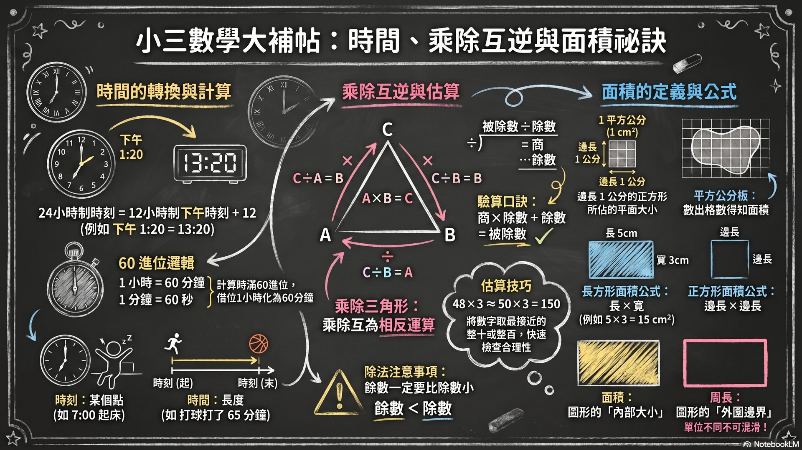

認識 24 小時制
時、分、秒的換算
時間加減（60 進位）
時間量感
7-1 一日是 24 小時
從午夜 0 時開始，到隔天午夜結束，一整天剛好是 24 小時。
12 小時制 vs 24 小時制
日常生活常用「上午／下午」的 12 小時制，但火車時刻表、醫院掛號常用 24 小時制。
換算口訣：下午的時間 +12 = 24 小時制。例如：下午 1 點 → 1+12 = 13:00
| 12 小時制 | 24 小時制 |
|---|---|
| 上午 6 點 | 06:00 |
| 中午 12 點 | 12:00 |
| 下午 1 點 | 13:00 |
| 下午 6 點 | 18:00 |
| 晚上 9 點 | 21:00 |
| 午夜 12 點 | 00:00（隔天） |
7-2 一小時是 60 分鐘
分針走完一圈 = 60 分鐘 = 1 小時
時間加減注意 60 進位
1
分鐘先加
40 分 + 30 分 = 70 分
2
滿 60 進位
70 分 = 1 時 10 分
3
小時再加
2 時 + 1 時 + 1 時 = 4 時
範例：2 時 40 分 + 1 時 30 分 = 4 時 10 分
7-3 一分鐘是 60 秒
秒針走完一圈 = 60 秒 = 1 分鐘
時間單位換算
- 3 分鐘 = 3 × 60 = 180 秒
- 120 秒 = 120 ÷ 60 = 2 分鐘
- 2 分 30 秒 = 2×60 + 30 = 150 秒
口訣：分→秒 ×60；秒→分 ÷60
關鍵名詞
| 名詞 | 說明 |
|---|---|
| 24 小時制 | 從 0:00 到 23:59，不分上午下午的計時方式 |
| 12 小時制 | 用上午／下午區分，一天分成兩個 12 小時 |
| 秒 | 比分鐘更小的時間單位，1 分 = 60 秒 |
| 時間量感 | 對時間長短的感覺，例如 1 分鐘大約多長 |
形成性評量
選擇題
1. 下午 3 點用 24 小時制表示是？
2. 1 小時 = 幾分鐘？
3. 2 分 30 秒 = 幾秒？
是非題
1. 中午 12 點用 24 小時制表示是 12:00
2. 1 分鐘 = 100 秒
3. 時間加減和一般加減一樣是十進位
填空題
1. 下午 8 點用 24 小時制是 ___ 點
2. 180 秒 = ___ 分鐘
📊 授課簡報
NotebookLM 自動生成｜全 9 單元 15 頁


1 / 15
🖼️ 資訊圖表
點擊可全螢幕檢視

教師備課區
教學策略
- 用火車時刻表、課表讓學生練習 24 小時制轉換
- 讓學生計時跑步或跳繩，建立「秒」的量感
- 用時鐘模型操作分針、秒針的走動
Bloom 認知層次
| 層次 | 學習表現 |
|---|---|
| 記憶理解 | 說出 1 日=24 時、1 時=60 分、1 分=60 秒 |
| 應用 | 能做 12→24 小時制轉換和時間加減 |
| 分析 | 解釋為什麼時間加減不能用十進位 |
易錯點提醒
- 12 小時制和 24 小時制搞混（尤其中午 12 點 vs 午夜 12 點）
- 時間加減忘記 60 進位，直接用十進位計算
- 中午 12 點的歸屬：是上午還是下午？（24 小時制為 12:00）